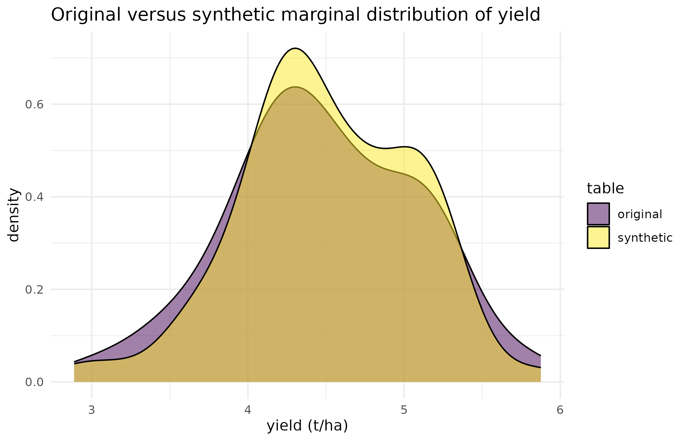

Why
An analyst has the synthetic table and their own code; the custodian keeps the original and the recipe. This vignette covers what the recipe carries, how the analyst’s finished pipeline is run on the original, and what happens when the original holds a value the recipe has never seen.
What
The masque_recipe object returned by mask()
is the only artefact that must stay confidential alongside the
original; get it with recipe(). Two functions make the
round-trip. apply_recipe() recodes the original data into
the clone’s labels and column names, which is how a custodian runs an
analyst’s finished pipeline on it. unmask() goes the other
way and turns a result in the clone’s labels back into the original
ones. save_recipe()/read_recipe() persist a
recipe to a single .rds file, and
reveal_maps() is the one explicit, warning-gated call that
shows the level maps a redacted print() withholds.
Do
What a recipe holds
m <- mask(df, roles, mode = "collaborate", seed = 1L)
rec <- recipe(m)
class(rec)
#> [1] "masque::masque_recipe" "S7_object"A recipe carries only what the round-trip needs:
-
masque_version,created_at,mode,seed– provenance. -
roles– the two-axis role and action table. -
level_maps– the per-column original-to-alias maps. The sensitive part. -
column_name_map– the column-name aliases, whenalias_nameswas used (otherwiseNULL). -
cleaning– the tidying done before masking (column names made valid R names, whitespace trimmed) soapply_recipe()re-applies the identical tidying. -
storage_classes,factor_meta– the original column classes and factor metadata, for faithful reconstruction. -
coords– one entry per coordinate pair declared tomask()’scoordsargument: the jitter method and radius, the site grouping it was masked under, and how many sites the grouping produced. Empty for a recipe written before 0.10.0, which had no such record. -
allow_unmasked_coords–TRUEonly when the caller deliberately wrote a real coordinate through unmasked.FALSE, and absent, on a recipe written before 0.11.0. -
integrity_fp– a SHA-256 ofis.na(original): an integrity fingerprint, not a privacy guarantee.
It deliberately does not hold the copula covariance, the raw observed values, or any file paths or usernames.
A recipe built with coords carries its own coordinate
account, so an audit of the recipe does not need the original data
back:
df_geo <- df
df_geo$lat <- -34.9 + stats::runif(nrow(df_geo), -0.05, 0.05)
df_geo$lon <- 138.6 + stats::runif(nrow(df_geo), -0.05, 0.05)
roles_geo <- propose_roles(df_geo, mode = "collaborate")
roles_geo <- set_role(roles_geo, "yield", role = "outcome")
roles_geo <- set_role(roles_geo, c("lat", "lon"), action = "keep")
m_geo <- mask(df_geo, roles_geo, mode = "collaborate", seed = 1L,
coords = list(list(lat = "lat", lon = "lon")))
n_sites_recorded <- recipe(m_geo)@coords[[1]]$n_sites
recipe(m_geo)@coords[[1]][c("method", "min_km", "max_km", "n_sites")]
#> $method
#> [1] "donut"
#>
#> $min_km
#> [1] 5
#>
#> $max_km
#> [1] 20
#>
#> $n_sites
#> [1] 72
recipe(m_geo)@allow_unmasked_coords
#> [1] FALSEEach plot here has its own coordinate, so each plot is a site and
n_sites equals the number of plots. Rows that share a
coordinate would share one displacement (see
jitter_coordinates()).
Printing is redacted
The print method shows the role and action table with a marker for
which columns hold a level map (* mapped, =
not), but never the vocabularies themselves:
rec
#>
#> ── masque_recipe ───────────────────────────────────────────────────────────────────────────────────
#> • Created: 2026-09-26 08:02:45 UTC
#> • Mode: collaborate
#> • Clone fidelity: marginal / structural (global copula)
#> • Seed: present (redacted)
#> • masque version: 0.14.0
#> • Integrity fingerprint: 0cec319ba9e2...
#>
#> ── Columns (7 total; 1 level map; 0 column-name maps) ──
#>
#> = design keep plot (integer)
#> = design keep rep (factor)
#> = design keep block (factor)
#> * treatment alias gen (factor)
#> = outcome scramble yield (numeric)
#> = design keep row (integer)
#> = design keep col (integer)
#>
#> ✖ PRIVATE - never share this recipe alongside the synthetic.
#> Use `reveal_maps(rec)` to inspect level maps explicitly.The custodian – and only the custodian – can reveal the maps with an explicit, warning-gated call:
reveal_maps(rec)
#> ! Revealing sensitive level maps. Proceed at your discretion.
#>
#> ── gen
#>
#> ── seedThe round-trip
The usual pattern is to fit on the synthetic, recode the original
with apply_recipe(), and predict on it:
# Analyst trains on the synthetic clone.
fit <- lm(yield ~ gen, data = synthetic(m))
# Custodian re-targets the same pipeline onto the real data.
orig_in_synth_space <- apply_recipe(df, rec)
preds <- predict(fit, newdata = orig_in_synth_space)
preds_match_nrow <- length(preds) == nrow(df)
preds_match_nrow
#> [1] TRUEunmask() recovers the original labels:
fwd <- apply_recipe(df, rec)
back <- unmask(fwd, rec)
labels_recovered <- identical(as.character(back$gen), as.character(df$gen))
labels_recovered
#> [1] TRUEColumns whose action is keep, numeric columns and
numeric predictions pass through both functions unchanged.
Fail-closed translation
If the data drifts, for example a new treatment level the recipe has
never seen, apply_recipe() stops with an error:
drifted <- df
levels(drifted$gen) <- c(levels(df$gen), "BRAND_NEW")
drifted$gen[1] <- "BRAND_NEW"
apply_recipe(drifted, rec)
#> Error in `.fail_unmapped()`:
#> ! Value not in the recipe's level map in column gen: "BRAND_NEW".
#> ℹ Schema drift, or original levels the recipe has never seen. Unknown values are not coerced to NA
#> (fail-closed).
#> • Rebuild the recipe from a dataset that contains these values, or strip them before retargeting.The message names the column (gen) and the value
("BRAND_NEW"). Rebuild the recipe from data that contains
the new value, or remove the drifted rows before re-targeting.
Saving the recipe
save_recipe() writes a single small .rds,
to be stored next to the original at the same security class.
read_recipe() validates the file and notes a version
mismatch without raising an error.
tmp <- tempfile(fileext = ".rds")
save_recipe(rec, tmp)
rec2 <- read_recipe(tmp)
fingerprint_survives_roundtrip <- identical(rec@integrity_fp, rec2@integrity_fp)
fingerprint_survives_roundtrip
#> [1] TRUEMulti-table bundles
A mask_set() result carries a recipe bundle –
one recipe per table plus the shared cross-table link maps. The same
apply_recipe() and unmask() verbs dispatch on
it, operating table by table over a named list:
set_dir <- system.file("extdata", "met_set", package = "masque")
ms <- mask_set(set_dir, mode = "collaborate", seed = 1L, quiet = TRUE)
#> Warning: Numeric environment column year remains "keep" in collaborate mode.
#> ℹ This preserves environment structure but may disclose year or other numeric labels; review before
#> release.
originals <- read_set(set_dir)
fwd_set <- suppressWarnings(apply_recipe(originals, recipe(ms)))
names(fwd_set)
#> [1] "agronomy" "quality"Because the shared keys were aliased consistently at masking time, the re-targeted tables join on the same keys the synthetic tables do.
Figure: the clone the analyst actually develops against
The checks above are about labels. The figure shows the numeric column the analyst works with: the original yield against the synthetic yield.
synth_tbl <- synthetic(m)
overlay_df <- rbind(
data.frame(value = df$yield, table = "original"),
data.frame(value = synth_tbl$yield, table = "synthetic")
)
ggplot2::ggplot(overlay_df, ggplot2::aes(x = value, fill = table)) +
ggplot2::geom_density(alpha = 0.5) +
ggplot2::scale_fill_viridis_d(name = "table") +
ggplot2::labs(
x = "yield (t/ha)", y = "density",
title = "Original versus synthetic marginal distribution of yield"
) +
ggplot2::theme_minimal()
Density of yield, original trial against the synthetic clone the analyst develops against. The two distributions overlap closely because the default numeric synthesis preserves each column’s marginal distribution.
Read
All three round-trip checks pass: one prediction per original row, the original genotype labels recovered, and the same integrity fingerprint after the recipe is saved and read back. A value the recipe has never seen stops the translation where the data drifted.
The two yield densities overlap closely, so the marginal distribution is kept. That says nothing about whether a treatment effect or a non-linear relationship between columns is kept; see Confidentiality and the threat model.
With the recipe, the custodian can run the analyst’s finished pipeline on the real data without changing it.
Limits
This vignette uses one recipe built from one clean public trial, with
one planted drift. A table whose category labels changed over time
(renamed treatments, retired sites) will be refused more often. The
round-trip verbs invert only what the recipe recorded: numeric columns
pass through unchanged, so unmask() cannot undo a numeric
transformation a pipeline made, and a recipe cannot repair a join that
was broken before masking. The leakage audit, the conditional clone and
the coordinate controls are covered in Confidentiality and the
threat model.
What to read next
Getting started with masque is the custodian’s side of this same handoff: building and reviewing the masking plan that produces the recipe this vignette reads. Confidentiality and the threat model sets out what the recipe and the synthetic together do and do not protect, including the leakage audit and the conditional clone that preserves a treatment effect this vignette’s round-trip checks do not touch.
Reproduce
set.seed(1) is set once for the document, and every
mask() or mask_set() call passes
seed = 1L, so each is reproducible on its own. Package
versions follow.
sessionInfo()
#> R version 4.6.1 (2026-06-24)
#> Platform: x86_64-pc-linux-gnu
#> Running under: Ubuntu 24.04.5 LTS
#>
#> Matrix products: default
#> BLAS: /usr/lib/x86_64-linux-gnu/openblas-pthread/libblas.so.3
#> LAPACK: /usr/lib/x86_64-linux-gnu/openblas-pthread/libopenblasp-r0.3.26.so; LAPACK version 3.12.0
#>
#> locale:
#> [1] LC_CTYPE=C.UTF-8 LC_NUMERIC=C LC_TIME=C.UTF-8 LC_COLLATE=C.UTF-8
#> [5] LC_MONETARY=C.UTF-8 LC_MESSAGES=C.UTF-8 LC_PAPER=C.UTF-8 LC_NAME=C
#> [9] LC_ADDRESS=C LC_TELEPHONE=C LC_MEASUREMENT=C.UTF-8 LC_IDENTIFICATION=C
#>
#> time zone: UTC
#> tzcode source: system (glibc)
#>
#> attached base packages:
#> [1] stats graphics grDevices utils datasets methods base
#>
#> other attached packages:
#> [1] masque_0.14.0
#>
#> loaded via a namespace (and not attached):
#> [1] gtable_0.3.6 jsonlite_2.0.0 compiler_4.6.1 maps_3.4.3
#> [5] jquerylib_0.1.4 systemfonts_1.3.2 scales_1.4.0 textshaping_1.0.5
#> [9] yaml_2.3.12 fastmap_1.2.0 ggplot2_4.0.3 R6_2.6.1
#> [13] labeling_0.4.3 knitr_1.52 tibble_3.3.1 desc_1.4.3
#> [17] bslib_0.12.0 pillar_1.11.1 RColorBrewer_1.1-3 rlang_1.3.0
#> [21] cachem_1.1.0 xfun_0.61 fs_2.1.0 sass_0.4.10
#> [25] S7_0.2.2 otel_0.2.0 viridisLite_0.4.3 cli_3.6.6
#> [29] pkgdown_2.2.1 withr_3.0.3 magrittr_2.0.5 digest_0.6.39
#> [33] grid_4.6.1 lifecycle_1.0.5 vctrs_0.7.3 evaluate_1.0.5
#> [37] glue_1.8.1 data.table_1.18.6.1 farver_2.1.2 ragg_1.5.2
#> [41] rmarkdown_2.32 tools_4.6.1 pkgconfig_2.0.3 htmltools_0.5.9